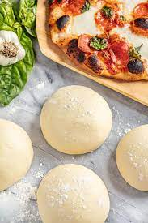

Pizza Dough
Ingredients
- 375ml warm water
pinch of caster sugar
- 2g dried yeast
- 600g plain flour
- 1 tsp salt
- 60ml olive oil
Instructions
- Combine the water, yeast and sugar in a small bowl. Set aside for 5 minutes or until foamy. Combine the flour and salt in a large bowl and make a well in the centre. Add the yeast mixture and oil. Use a round-bladed knife in a cutting motion to mix until the mixture is combined. Use your hands to bring the dough together in the bowl.
- Brush a bowl lightly with oil. Turn the dough onto a lightly floured surface and knead for 10 minutes or until smooth and elastic. Place in the prepared bowl and turn to coat in oil. Cover with plastic wrap and set aside in a warm, draught-free place to rise for 30 minutes or until dough doubles in size.
- Dust work surface with flour. Knead dough and form into a long cylinder. Divide into thirds. Use a rolling pin to roll each third into a 20cm disc, then add your favourite toppings and bake.
Return Home